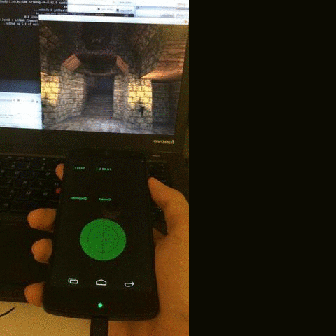
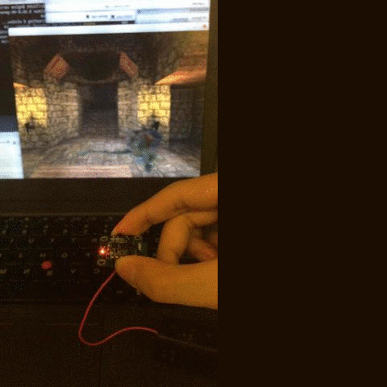

PERTHBLANK.IN
Wireless Game Control with Gyroscope and Android
Abstract 摘要:
Use Android phone and an external gyrosrope to remote contorl a game scene built with Irrlicht.用安卓手机与一个外置陀螺仪遥控电脑游戏场景.场景用Irrlich搭建
Detail 细节:
Use the phone to control the angle and directions of the view, and use the gyroscope to go forward or backward.用手机控制方向，用陀螺仪控制前后走动. 陀螺仪的数据通过蓝牙传送到安卓端，再由WiFi传送到PC
Parameter 参数:
- Game Engine: Irrlicht
- OS: Ubuntu 14.04 + Android 4.2
- Device: ThankPad + Android phone + Gyroscope with bluetooth
Keywords 关键技术:
- C++
- Android
- Bluetooth, WiFi
Demo 样例:
Direction Control

Walking Control